OSSC開発合宿の紹介
オープンソースソリューション推進室
OpenStandia 藤崎祥見
OpenStandia 藤崎祥見
メリット
デメリット
参加者の家族も参加（主に寺田GMの息子、しょうご君）
| 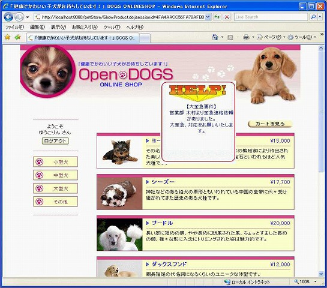 |
優勝 メンバー 高橋（OSSC） 田中（OSSC） 佐藤（OSSC） 木村（OSSC） ログインしたサイトに緊急メッセージを表示するサービス。 OpenSSOで連携しているサイトなら、どのサイトにログイン しても緊急メッセージが表示される。 |
| 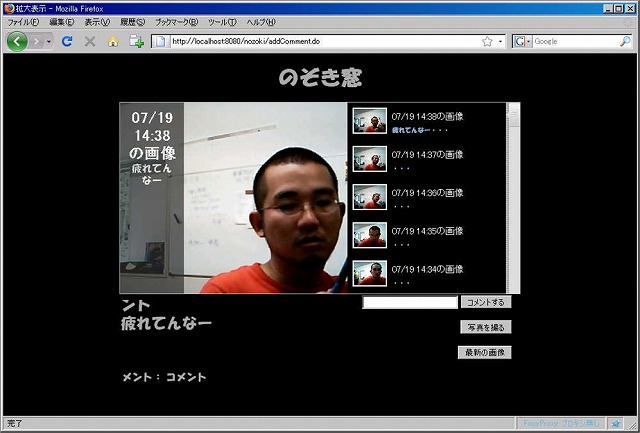 |
メンバー 松野（OSSC） 寺田（OSSC） 工藤（MCEA） ノートPC接続のカメラで定期的に撮影した画像とコメントを共有できるWEBサービス。 気になる子のノートPCにインストールするとストーカーができる。 |
| 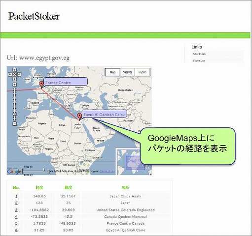 |
メンバー 藤崎（OSSC） 荻野（NRI） 森 （NRI） Tracerouteの経由地点のIPから経度・緯度を取得し、GoogleMapsへマッピングするWEBサービス。 |
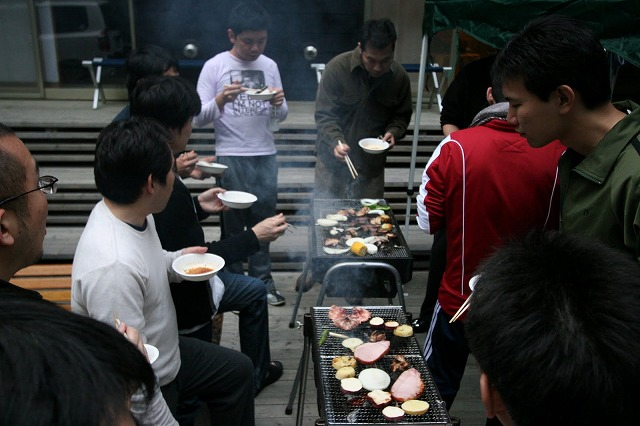
| 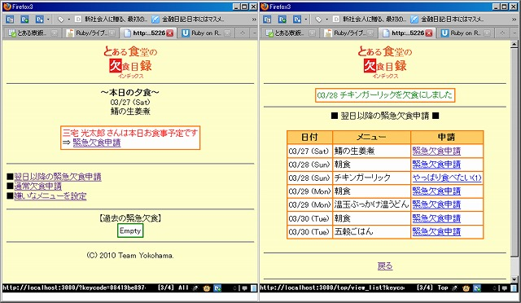 |
優勝 メンバー 橋立（NRI） 本村（NRI） 三宅（NRI） 後藤（NRI） NRI横浜寮の欠食届けは4日前までに提出しなければなりません。急な欠食で発生した寮食を寮生間で譲渡できるシステムです。 |
| 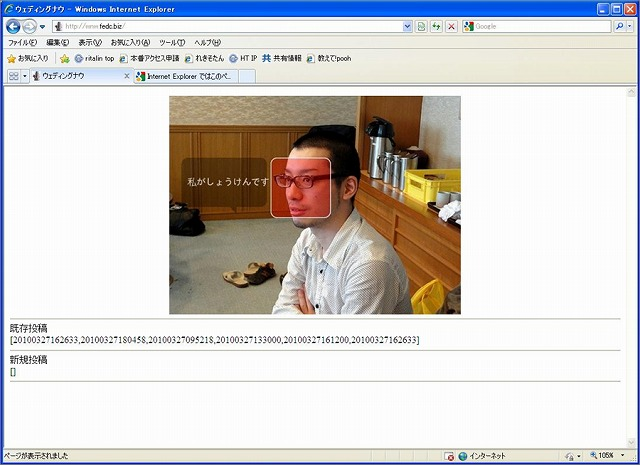 |
メンバー 藤崎（OSSC） 荻野（NRI） 渡部（NRI） Twitterから写真とコメントを投稿すると、顔認識の結果から画像に吹き出しをつけてコメントを埋め込みます。 |
 |
メンバー 驛 （NRI） 飯間（NRI） Twitterから写真とコメントを投稿すると、顔認識の結果から画像に吹き出しをつけてコメントを埋め込みます。 |
| 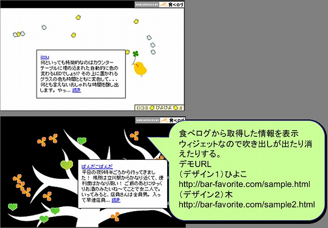 |
優勝 メンバー 岡本 （DMA） 木村 （DMA） 飲食店のHPにウィジェットを貼り付け、その飲食店の口コミ情報を「食べログ」から検索してウィジェットに表示します。 |
| 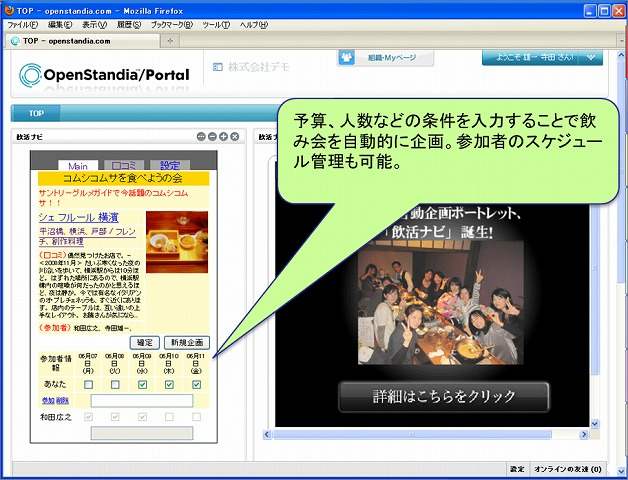 |
メンバー 寺田（OSSC） 和田（OSSC） 金野（OSSC） 松野（f4samurai） 最新のグルメトレンドから、条件にマッチした「飲み会」を自動的に企画してくれるWEBアプリです。 |
| 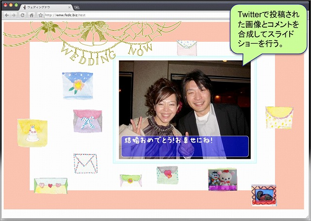
http://wnw2.fedc.biz/mitani/show http://wnw2.fedc.biz/mitani/list http://wnw2.fedc.biz/mitani/swipe |
メンバー 藤崎（OSSC） 荻野（NRI） 渡部（NRI） 寺師（NRI） 同期の結婚式用に作成。結婚したカップルに、Twitterを使ってリアルタイムに写真とメッセージを送れるWEBアプリ。写真はスライドショーされて新規投稿があると、青い鳩が画像を運んできます。 |
| 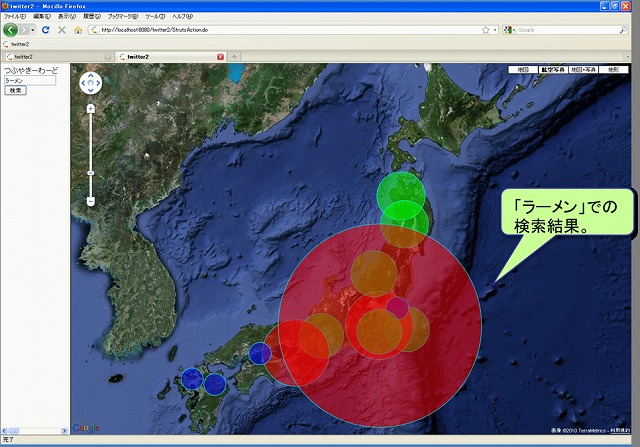 |
メンバー 田中（OSSC） 佐藤（OSSC） 駒形（NRI） あるキーワードについて、どこでどのくらいの数のつぶやきがTwitterで発信されているのかを、地図にマッピングします。 |
| 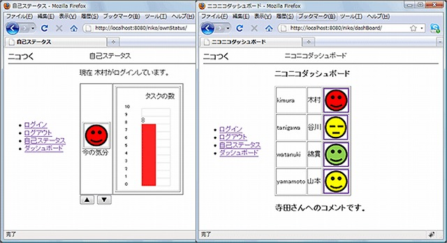 |
メンバー 高橋（OSSC） 工藤（MCEA） 木村（H3） チームメンバーの気分をスマイルマークで、作業量（タスク量）を棒グラフであらわし、チームで共有します。 |
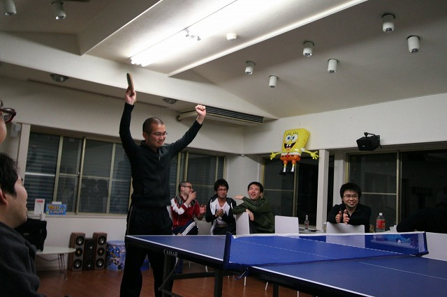
| 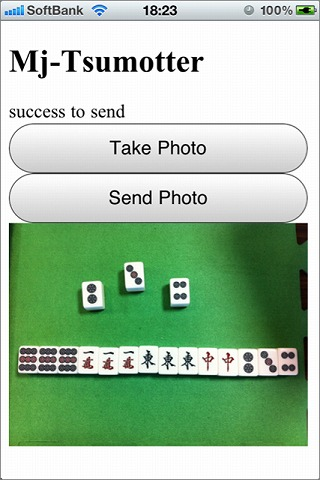 |
優勝 メンバー 藤崎（OSSC） 荻野（NRI） 渡部（NRI） 寺師（NRI） 駒形（NRI） 麻雀の上がり役の写真を撮ると画像解析を行い、役と点数を教えてくれます。Twitterにもつぶやきます。 |
| 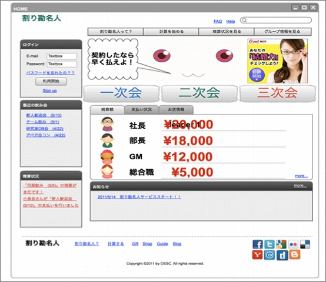 |
メンバー 瀬戸島（NRI） 小長谷（NRI） 有川 （NRI） 飲み会の幹事を助けます。役職によって傾斜をつけた割り勘を計算します。 |
| 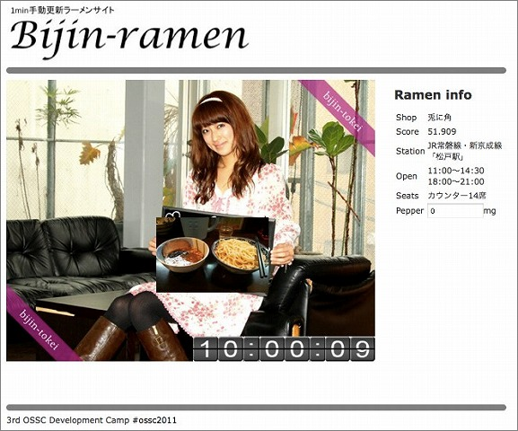 |
メンバー 菅原 （NRI） 浜崎 （NRI） 伊三野（NRI） 美人がラーメンを紹介してくれます。 |
| 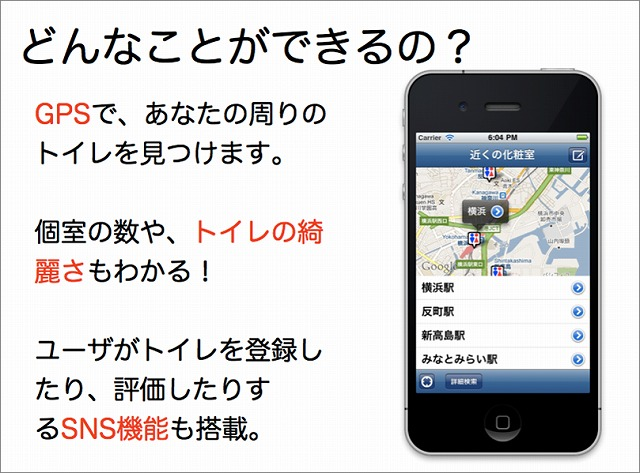 |
メンバー 橋立（NRI） 本村（NRI） 驛 （NRI） GPS情報から周りのトイレを検索してくれます。 |
| 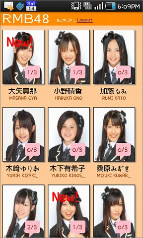 |
メンバー 三宅（NRI） 後藤（NRI） ・ユーザのTwitterつぶやきにマッチする属性（趣味、好きな食べ物etc）を持つアイドルを教えてくれる ・アイドルごとにマッチ条件が設定されており、条件クリアのコレクションができる（ゲーム要素） |
| 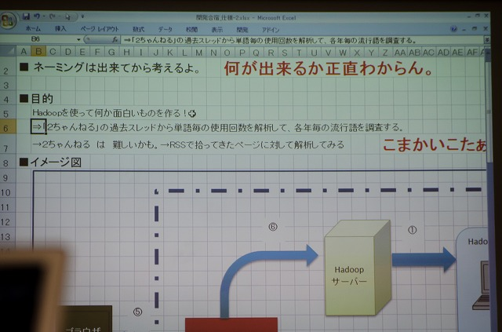 |
メンバー 高橋（OSSC） 金野（OSSC） 和田（OSSC） 梶原（NRI） 工藤（MCEA） 松本（個人） 2ちゃんねるからキーワードを抽出し、多く使われている順にソートして表示します。 |
| 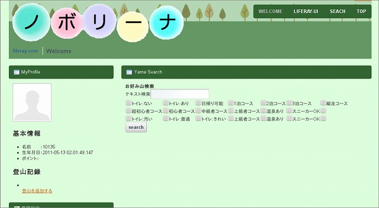 |
メンバー 小出（PRO） 松崎（PRO） 片桐（PRO） 登山情報ポータルサイト。自分が上った山の情報を登録できます。人が登録した情報を検索できます。 |
| 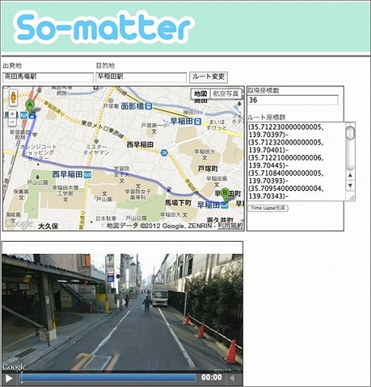 |
優勝 メンバー 菅原 （NRI） 佐々木（NRI） 浜崎 （NRI） 二地点を入力すると、Googleストリートビューから画像を取得して、Time Lapse動画を生成します。 |
| 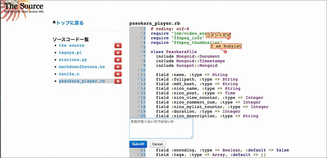
http://thesource.meteor.com/ |
メンバー 橋立（ウサギィ） 本村（NRI） 驛 （NRI） Meteorを使った双方向ソースコードレビューシステム。ブラウザを使用してソースコードへのコメントをリアルタイムに共有できる。 |
| 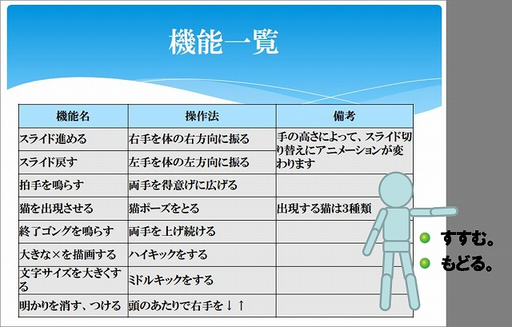 |
メンバー 三宅 （NRI） 後藤 （NRI） Kinectを利用して、モーションキャプチャでプレゼンテーションを行うアプリ。例えば、右手を体の右方向に振るとスライドが進み、左方向に振るとスライドが戻る |
| 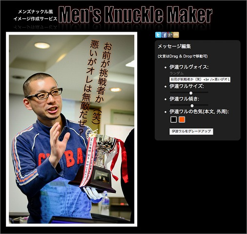 |
メンバー 大野 （NRI） 倉見 （NRI） 伊三野（NRI） http://mennakumaker.herokuapp.com/ |
画像をアップロードすると、Men’s Knuckleライクなメッセージを合成して表示してくれるアプリ。
| 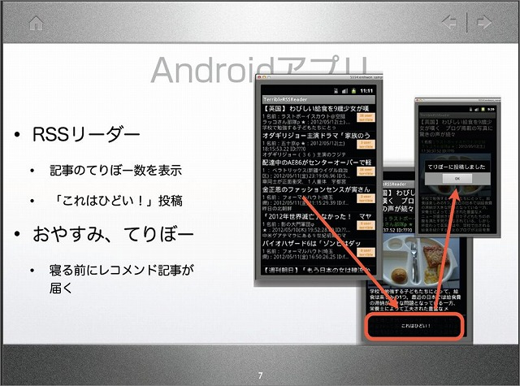 |
メンバー 二瓶（NRI） 能登（NRI） 元田（NRI） 悦田（NRI） いいね！の反対の意味の「これはひどい！」を共有するサービス。 |
| 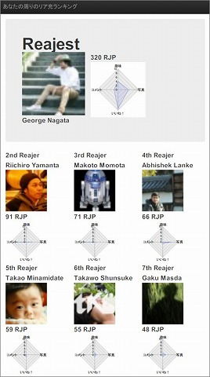 |
メンバー 藤崎（OSSC） 渡部（OSSC） 林田（OSSC） http://reajest.fedc.biz/ |
Facebookから情報を取得して、自分と自分の友達の中からリア充ポイントを作成し、ランキングを表示するアプリ
| 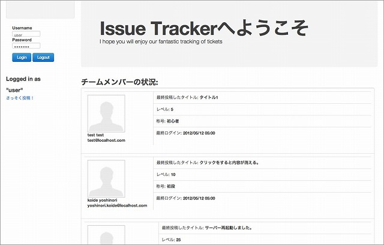 |
メンバー 小出（PRO） 松崎（PRO） 片桐（PRO） 天野（PRO） BTSにゲーミフィケーションの要素を加えたシステム。ランキング付け、バグ修正による報酬、ユーザ間でのフィードバックを取り入れる。 |